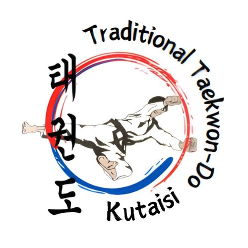
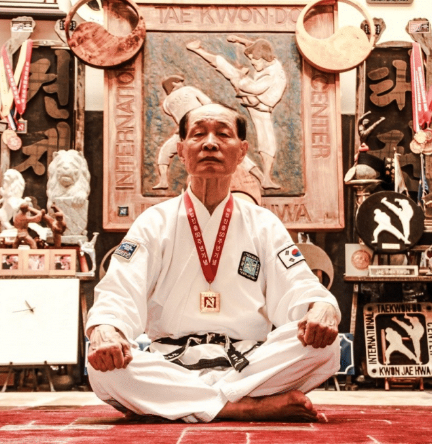
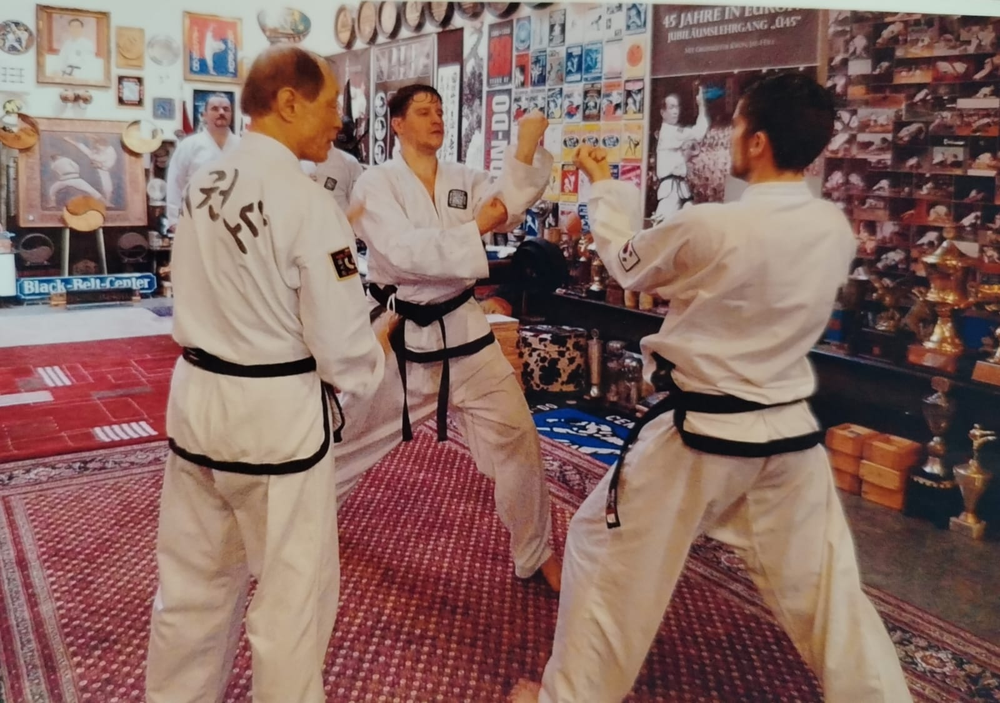
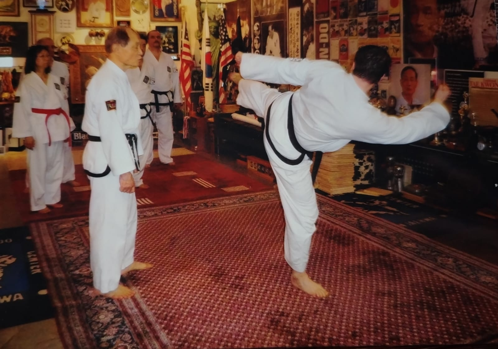
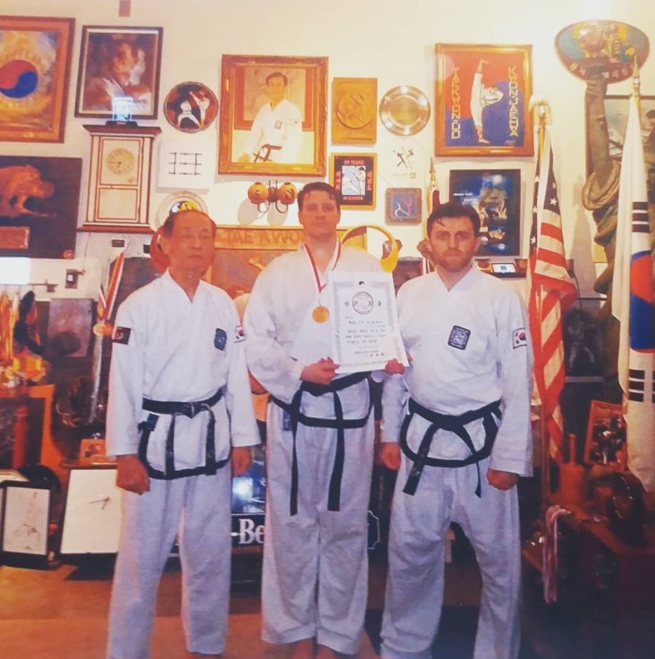
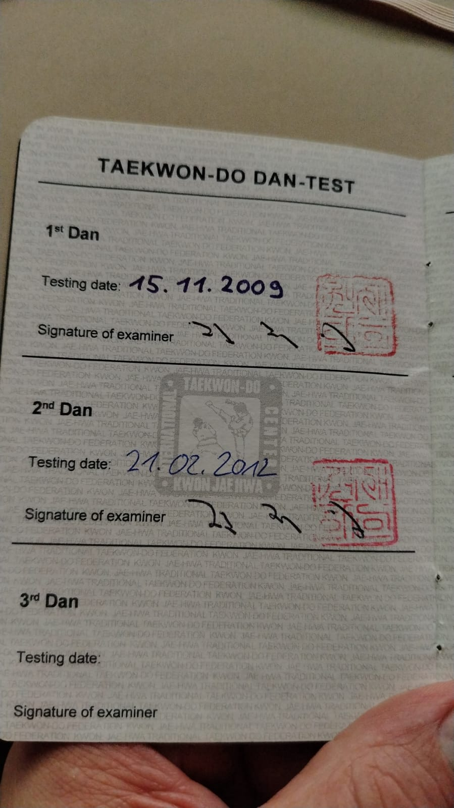
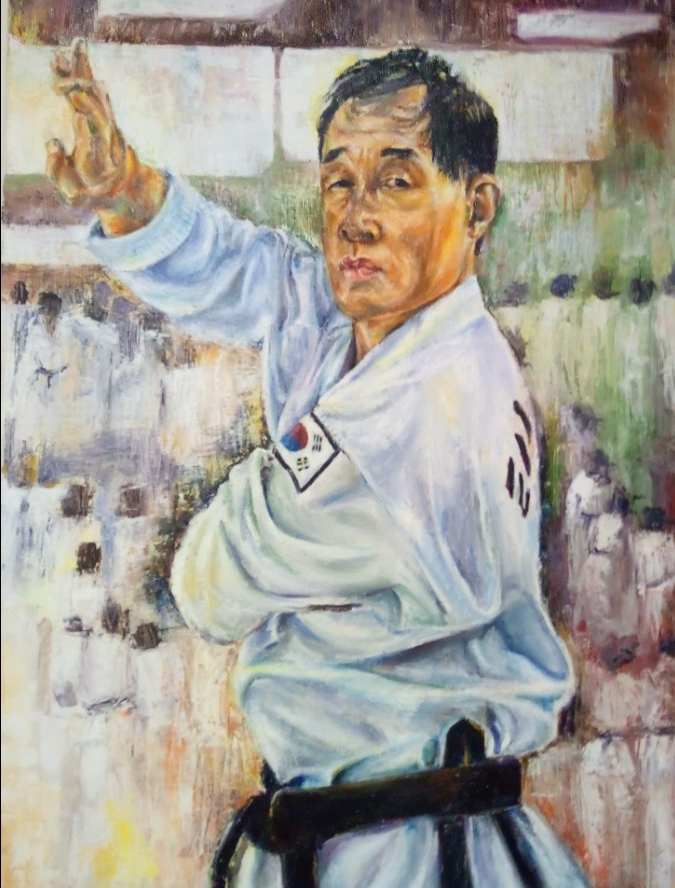
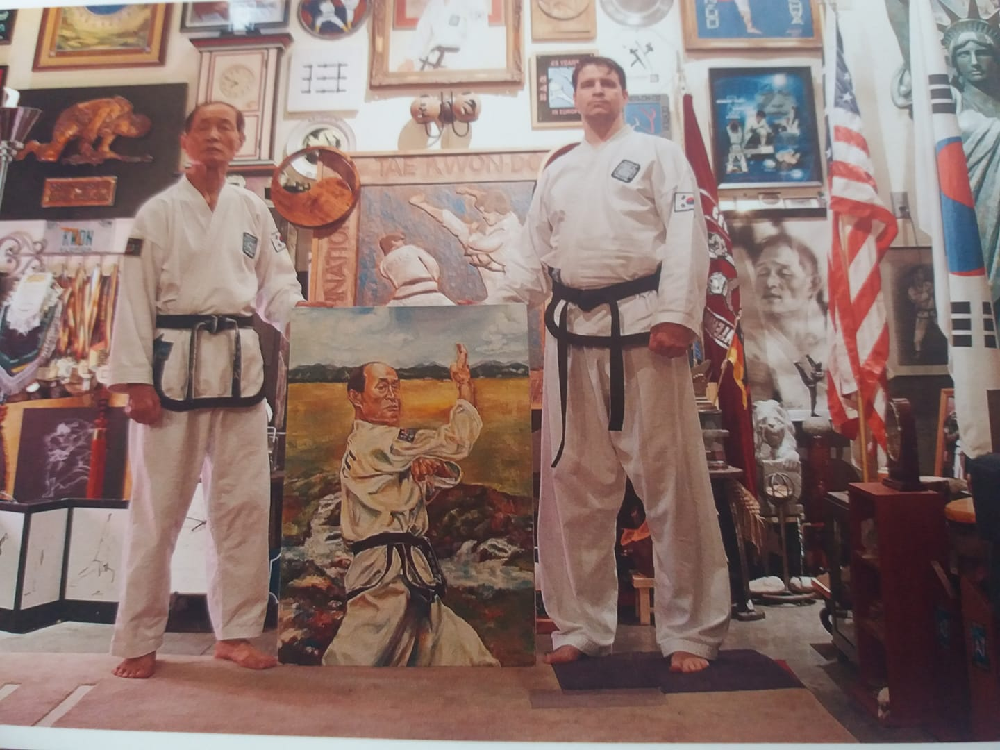

Рождение в Пусане, Южная Корея
Начало жизненного пути, оказавшего влияние на традиционное тхэквондо далеко за пределами Кореи.

Traditional Taekwon-DoКутаиси · ГрузияПрямая личная преемственность
Жизнь, наследие и учение, сформировавшие поколения мастеров традиционного тхэквондо, а также личный путь инструктора Кая Хакера.

Источник нашей традиции
Гранд-мастер Квон Дже Хва сыграл ключевую роль в становлении и распространении традиционного тхэквондо в Европе.
Он родился в Пусане, Южная Корея, в 1937 году. Позднее стал выдающимся учителем, автором и международным представителем боевого искусства. В его обучении точная техника соединялась с настойчивостью, самоконтролем и ответственностью. Эти принципы и сегодня определяют тренировки в Traditional Taekwon-Do Kutaisi.
«Боевого искусства нельзя освоить за один момент. Его ценность заключается в том, чтобы постоянно делать всё возможное и работать над собой».
Основной принцип учения гранд-мастера Квона Дже Хва
Основные этапы
Начало жизненного пути, оказавшего влияние на традиционное тхэквондо далеко за пределами Кореи.
Участие в избранной корейской демонстрационной команде, представлявшей боевое искусство в Европе и других регионах.
Главный тренер Немецкого союза тхэквондо, позднее — национальный тренер секции тхэквондо Немецкого союза дзюдо.
Создание важного европейского центра традиционного учения.
Кай Хакер участвует в интенсивной поездке и сдаёт экзамен на 2-й дан в частном доджанге гранд-мастера.
Личный путь Кая Хакера
Кай начал заниматься традиционным тхэквондо. Девять лет постоянных тренировок, дисциплины и личного развития привели к первому экзамену на чёрный пояс.
Экзамен в Грефельфинге под Мюнхеном под личным руководством гранд-мастера Квона Дже Хва.
Присвоен во время интенсивной тренировочной и экзаменационной поездки в Портленд, штат Орегон.




17–25 февраля 2012 · Портленд, Орегон
Решение о 2-м дане принималось не за один день. Экзамен продолжался на протяжении всей поездки.
Гранд-мастер Квон пригласил делегацию из Германии в свой частный доджанг в Портленде. Каждый день Кай демонстрировал технику, выносливость, концентрацию и силу духа. В программу входили постоянные тесты на разбивание — всего 40 деревянных досок. 21 февраля 2012 года гранд-мастер Квон лично присвоил Каю 2-й дан.

Традиция живёт в Кутаиси
Это произведение искусства посвящено гранд-мастеру Квону и прямой связи его учения со школой в Кутаиси.
Оригинальная работа Мирвелашвили. Портрет был создан специально для Traditional Taekwon-Do Kutaisi. Оригинал находится в школе в Кутаиси.

Исторические сведения основаны на открытых материалах, включая биографию Taekwon-Do Center Terranova. Даты экзаменов подтверждены личным Dan-паспортом Кая Хакера.
Продолжение традиции
Первая тренировка бесплатна. Мы приглашаем детей, подростков и взрослых.